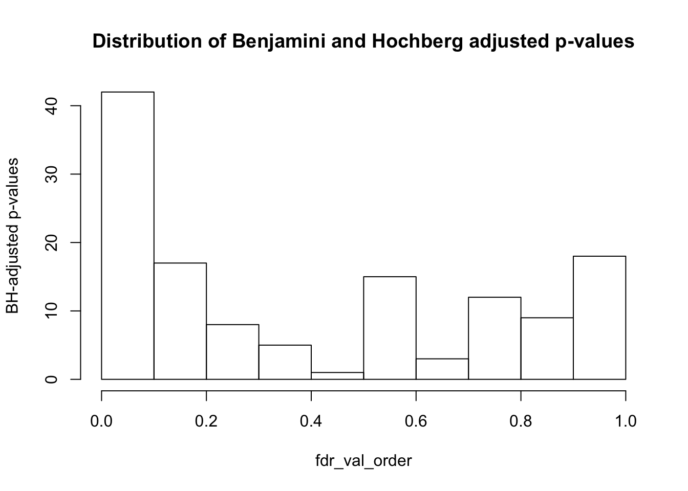

Analysis_of_potential_confounders_gene_expression
Lauren Blake
July 20, 2016
PART ONE: See if any of the variables for RNA-Seq correlate with the expression PCs for genes
Find gene PCs
# Load gene expression levels
cpm_12184 <- read.delim("../../../Reg_Evo_Primates/data/cpm_12184.txt")
dim(cpm_12184)## [1] 12184 47# Take gene PCs
pca_genes <- prcomp(t(cpm_12184), scale = T)
scores <- pca_genes$x
gene_pcs <- scores Load libraries and data
# Load libraries
# install.packages("polycor")
library("polycor")
# Load list of technical factors
RNA_seq_info <- read.csv("/Users/laurenblake/Dropbox/primate_BS-seq_project/Correlation with PCs - Lauren/RNA_seq_info_testing.csv")
RNA_seq_info <- as.data.frame(RNA_seq_info)
dim(RNA_seq_info)## [1] 47 31#Create plots for each of the possible confounders versus PCs 1-5
#pdf('../data/VarVsGenePCs.pdf')
#for (i in 3:length(RNA_seq_info)) {
# par(mfrow=c(1,5))
# plot(RNA_seq_info[,i], gene_pcs[,1], ylab = "PC1", xlab = " ")
# plot(RNA_seq_info[,i], gene_pcs[,2], ylab = "PC2", xlab = " ")
# plot(RNA_seq_info[,i], gene_pcs[,3], ylab = "PC3", xlab = " ")
# plot(RNA_seq_info[,i], gene_pcs[,4], ylab = "PC4", xlab = " ")
# plot(RNA_seq_info[,i], gene_pcs[,5], ylab = "PC5", xlab = " ")
# title(xlab = substitute(paste(k), list(k=colnames(RNA_seq_info)[i])), outer = TRUE, line = -2)
# mtext(substitute(paste('PCs vs. ', k), list(k=colnames(RNA_seq_info)[i])), side = 3, line = -2, outer = TRUE)
#}
#dev.off()Relationship between PC1
checkPC1 <- lm(gene_pcs[,1] ~ as.factor(RNA_seq_info$Tissue))
summary(checkPC1)##
## Call:
## lm(formula = gene_pcs[, 1] ~ as.factor(RNA_seq_info$Tissue))
##
## Residuals:
## Min 1Q Median 3Q Max
## -57.900 -12.990 -2.963 16.862 39.728
##
## Coefficients:
## Estimate Std. Error t value Pr(>|t|)
## (Intercept) -29.033 7.043 -4.122 0.000168
## as.factor(RNA_seq_info$Tissue)kidney 36.593 9.751 3.753 0.000519
## as.factor(RNA_seq_info$Tissue)liver 98.649 9.751 10.117 6.06e-13
## as.factor(RNA_seq_info$Tissue)lung -21.530 9.751 -2.208 0.032625
##
## (Intercept) ***
## as.factor(RNA_seq_info$Tissue)kidney ***
## as.factor(RNA_seq_info$Tissue)liver ***
## as.factor(RNA_seq_info$Tissue)lung *
## ---
## Signif. codes: 0 '***' 0.001 '**' 0.01 '*' 0.05 '.' 0.1 ' ' 1
##
## Residual standard error: 23.36 on 43 degrees of freedom
## Multiple R-squared: 0.8081, Adjusted R-squared: 0.7947
## F-statistic: 60.35 on 3 and 43 DF, p-value: 1.859e-15checkPC1 <- lm(gene_pcs[,2] ~ as.factor(RNA_seq_info$Tissue))
summary(checkPC1)##
## Call:
## lm(formula = gene_pcs[, 2] ~ as.factor(RNA_seq_info$Tissue))
##
## Residuals:
## Min 1Q Median 3Q Max
## -48.175 -22.203 7.079 14.446 52.474
##
## Coefficients:
## Estimate Std. Error t value Pr(>|t|)
## (Intercept) -65.964 7.823 -8.432 1.17e-10
## as.factor(RNA_seq_info$Tissue)kidney 68.287 10.831 6.305 1.32e-07
## as.factor(RNA_seq_info$Tissue)liver 90.714 10.831 8.375 1.40e-10
## as.factor(RNA_seq_info$Tissue)lung 99.357 10.831 9.173 1.11e-11
##
## (Intercept) ***
## as.factor(RNA_seq_info$Tissue)kidney ***
## as.factor(RNA_seq_info$Tissue)liver ***
## as.factor(RNA_seq_info$Tissue)lung ***
## ---
## Signif. codes: 0 '***' 0.001 '**' 0.01 '*' 0.05 '.' 0.1 ' ' 1
##
## Residual standard error: 25.95 on 43 degrees of freedom
## Multiple R-squared: 0.7034, Adjusted R-squared: 0.6827
## F-statistic: 33.99 on 3 and 43 DF, p-value: 2.019e-11checkPC2 <- lm(gene_pcs[,2] ~ as.factor(RNA_seq_info$Species))
summary(checkPC2)##
## Call:
## lm(formula = gene_pcs[, 2] ~ as.factor(RNA_seq_info$Species))
##
## Residuals:
## Min 1Q Median 3Q Max
## -82.400 -11.763 9.765 27.362 47.606
##
## Coefficients:
## Estimate Std. Error t value
## (Intercept) 8.849 10.064 0.879
## as.factor(RNA_seq_info$Species)human 15.567 14.467 1.076
## as.factor(RNA_seq_info$Species)rhesus macaque -40.588 14.232 -2.852
## Pr(>|t|)
## (Intercept) 0.3840
## as.factor(RNA_seq_info$Species)human 0.2878
## as.factor(RNA_seq_info$Species)rhesus macaque 0.0066 **
## ---
## Signif. codes: 0 '***' 0.001 '**' 0.01 '*' 0.05 '.' 0.1 ' ' 1
##
## Residual standard error: 40.25 on 44 degrees of freedom
## Multiple R-squared: 0.2696, Adjusted R-squared: 0.2364
## F-statistic: 8.119 on 2 and 44 DF, p-value: 0.0009972Testing association between a particular variable and PCs with a linear model
#Make an empty matrix to put all of the data in
pvaluesandr2 = matrix(data = NA, nrow = 5, ncol = 28*2, dimnames = list(c("PC1", "PC2", "PC3", "PC4", "PC5"), c("Species", "Species R^2", "Tissue", "Tissue R^2", "Individual", "Ind. R^2", "RNA extraction date", "Extract. date R^2", "Multiplexing index sequence", "Multi. index R^2", "Multiplexing mix codes", "Multi. mix R^2", "Sequencing location: at UCGF", "Location R^2", "Total number of reads sequenced", "Read Seq R^2", "Percentage of bps trimmed (adapters)", "Trimmed R^2", "Number of reads shorter than 20bp removed", "Removed R^2", "Maximum read length after trimming", "Max. length R^2", "Total number of reads processed in tophat", "Reads processed R^2", "Total number of mapped reads", "Mapped reads R^2", "Percentage of mapped reads overlapping a junction", "Perc. junction R^2", "Number of junctions", "Num. junctions R^2", "Number of reads mapped on orthologous exons", "OrthoExons R^2", "Number of orthologous exons with at least 1 mapped read", "Ortho exons read R^2", "Number of orthologous genes with at least 1 mapped read", "Ortho genes read R^2", "RNA concentration (ng/uL)", "RNA conc. R^2", "RIN score", "RIN R^2", "Library concentration (ng/uL)", "Lib. conc. R^2", "Library fragments size (bp)", "Lib. frag. R^2", "Sex", "R^2", "Age quantile", "R^2", "Hours postmortem", "R^2", "Cause of death", "R^2", "Possible conditions affecting tissues", "R^2", "Source", "R^2")))
#Check lm to see how well the variables containing ordinal data are correlated with a PC
#For PCs 1-5
j=1
for (i in 3:9){
for (j in 1:5){
checkPC1 <- lm(gene_pcs[,j] ~ as.factor(RNA_seq_info[,i]))
#Get the summary statistics from it
summary(checkPC1)
#Get the p-value of the F-statistic
summary(checkPC1)$fstatistic
fstat <- as.data.frame(summary(checkPC1)$fstatistic)
p_fstat <- 1-pf(fstat[1,], fstat[2,], fstat[3,])
#Fraction of the variance explained by the model
r2_value <- summary(checkPC1)$r.squared
#Put the summary statistics into the matrix w
pvaluesandr2[j, (2*i-5)] <- p_fstat
pvaluesandr2[j, (2*i-4)] <- r2_value
}
}
#Check lm to see how well the variables containing numerical data are correlated with a PC
j=1
for (j in 1:5){
for (i in 10:24){
checkPC <- lm(gene_pcs[,j] ~ RNA_seq_info[,i])
#Get the summary statistics from it
summary(checkPC)
#Get the p-value of the F-statistic
summary(checkPC)$fstatistic
fstat <- as.data.frame(summary(checkPC)$fstatistic)
p_fstat <- 1-pf(fstat[1,], fstat[2,], fstat[3,])
#Fraction of the variance explained by the model
r2_value <- summary(checkPC)$r.squared
#Put the summary statistics into the matrix a
pvaluesandr2[j, 2*i-5] <- p_fstat
pvaluesandr2[j, 2*i-4] <- r2_value
i = i+1
}
j=j+1
}
j=1
for (i in 25:30){
for (j in 1:5){
checkPC1 <- lm(gene_pcs[,j] ~ as.factor(RNA_seq_info[,i]))
#Get the summary statistics from it
summary(checkPC1)
#Get the p-value of the F-statistic
summary(checkPC1)$fstatistic
fstat <- as.data.frame(summary(checkPC1)$fstatistic)
p_fstat <- 1-pf(fstat[1,], fstat[2,], fstat[3,])
#Fraction of the variance explained by the model
r2_value <- summary(checkPC1)$r.squared
#Put the summary statistics into the matrix w
pvaluesandr2[j, (2*i-5)] <- p_fstat
pvaluesandr2[j, (2*i-4)] <- r2_value
}
}Test for potential violations of the assumptions of the linear model
#Plot the residuals to look for violations of the assumptions of lm
pdf('../data/Residuals_vs_var_GenePCs.pdf')
i = 3
for (i in 3:9){
par(mfrow=c(1,5))
checkPC1 <- lm(gene_pcs[,1] ~ as.factor(RNA_seq_info[,i]))
plot(RNA_seq_info[,i], resid(checkPC1), ylab = "Residuals (lm with PC1)", xlab = " ")
checkPC2 <- lm(gene_pcs[,2] ~ as.factor(RNA_seq_info[,i]))
plot(RNA_seq_info[,i], resid(checkPC2), ylab = "Residuals (lm with PC2)", xlab = " ")
checkPC3 <- lm(gene_pcs[,3] ~ as.factor(RNA_seq_info[,i]))
plot(RNA_seq_info[,i], resid(checkPC3), ylab = "Residuals (lm with PC3)", xlab = " ")
checkPC4 <- lm(gene_pcs[,4] ~ as.factor(RNA_seq_info[,i]))
plot(RNA_seq_info[,i], resid(checkPC4), ylab = "Residuals (lm with PC4)", xlab = " ")
checkPC5 <- lm(gene_pcs[,5] ~ as.factor(RNA_seq_info[,i]))
plot(RNA_seq_info[,i], resid(checkPC5), ylab = "Residuals (lm with PC5)", xlab = " ")
title(xlab = substitute(paste(k), list(k=colnames(RNA_seq_info)[i])), outer = TRUE, line = -2)
mtext(substitute(paste('Residuals vs. ', k), list(k=colnames(RNA_seq_info)[i])), side = 3, line = -2, outer = TRUE)
}
#Need to divide this up because #22 has an NA in it
i = 10
for (i in 10:21){
par(mfrow=c(1,5))
checkPC1 <- lm(gene_pcs[,1] ~ RNA_seq_info[,i])
plot(RNA_seq_info[,i], resid(checkPC1), ylab = "Residuals (lm with PC1)", xlab = " ")
checkPC2 <- lm(gene_pcs[,2] ~ RNA_seq_info[,i])
plot(RNA_seq_info[,i], resid(checkPC2), ylab = "Residuals (lm with PC2)", xlab = " ")
checkPC3 <- lm(gene_pcs[,3] ~ RNA_seq_info[,i])
plot(RNA_seq_info[,i], resid(checkPC3), ylab = "Residuals (lm with PC3)", xlab = " ")
checkPC4 <- lm(gene_pcs[,4] ~ RNA_seq_info[,i])
plot(RNA_seq_info[,i], resid(checkPC4), ylab = "Residuals (lm with PC4)", xlab = " ")
checkPC5 <- lm(gene_pcs[,5] ~ RNA_seq_info[,i])
plot(RNA_seq_info[,i], resid(checkPC5), ylab = "Residuals (lm with PC5)", xlab = " ")
title(xlab = substitute(paste(k), list(k=colnames(RNA_seq_info)[i])), outer = TRUE, line = -2)
mtext(substitute(paste('Residuals vs. ', k), list(k=colnames(RNA_seq_info)[i])), side = 3, line = -2, outer = TRUE)
}
#Skip #22 because there is an NA in it
for (i in 23:24){
par(mfrow=c(1,5))
checkPC1 <- lm(gene_pcs[,1] ~ RNA_seq_info[,i])
plot(RNA_seq_info[,i], resid(checkPC1), ylab = "Residuals (lm with PC1)", xlab = " ")
checkPC2 <- lm(gene_pcs[,2] ~ RNA_seq_info[,i])
plot(RNA_seq_info[,i], resid(checkPC2), ylab = "Residuals (lm with PC2)", xlab = " ")
checkPC3 <- lm(gene_pcs[,3] ~ RNA_seq_info[,i])
plot(RNA_seq_info[,i], resid(checkPC3), ylab = "Residuals (lm with PC3)", xlab = " ")
checkPC4 <- lm(gene_pcs[,4] ~ RNA_seq_info[,i])
plot(RNA_seq_info[,i], resid(checkPC4), ylab = "Residuals (lm with PC4)", xlab = " ")
checkPC5 <- lm(gene_pcs[,5] ~ RNA_seq_info[,i])
plot(RNA_seq_info[,i], resid(checkPC5), ylab = "Residuals (lm with PC5)", xlab = " ")
title(xlab = substitute(paste(k), list(k=colnames(RNA_seq_info)[i])), outer = TRUE, line = -2)
mtext(substitute(paste('Residuals vs. ', k), list(k=colnames(RNA_seq_info)[i])), side = 3, line = -2, outer = TRUE)
}Look at significant p-values
#Get rid of the R^2 values
all_col <- 1:ncol(pvaluesandr2)
matrix_pval <- pvaluesandr2[ , all_col%%2==1 ]
#Find which variables/PC combinations are p-value < 0.05
TorF_matrix <- matrix_pval <=0.05
sum(matrix_pval <= 0.05/(28*5))## [1] 21#Find which variables/PC combinations are p-value < 0.05 not including species or tissue (because those explain PC1 and PC2)
matrix_pval_no_tissue_or_species = matrix_pval[ , 3:28]
matrix_pval_no_tissue_or_species## Individual RNA extraction date Multiplexing index sequence
## PC1 8.577332e-01 1.933096e-01 3.202755e-05
## PC2 3.089533e-01 8.775476e-03 2.494550e-03
## PC3 4.210981e-03 6.385467e-06 1.665273e-01
## PC4 9.971820e-01 6.167683e-01 1.541532e-09
## PC5 4.996004e-15 0.000000e+00 9.542053e-01
## Multiplexing mix codes Sequencing location: at UCGF
## PC1 3.828374e-01 0.40556453
## PC2 8.784915e-03 0.85463260
## PC3 3.806629e-05 0.51996073
## PC4 1.927352e-01 0.62874566
## PC5 3.820715e-01 0.07672979
## Total number of reads sequenced Percentage of bps trimmed (adapters)
## PC1 0.6623602 0.43484612
## PC2 0.8367218 0.03093471
## PC3 0.9498725 0.56268886
## PC4 0.1491588 0.55118204
## PC5 0.6813582 0.03486093
## Number of reads shorter than 20bp removed
## PC1 0.32598741
## PC2 0.02745845
## PC3 0.68306619
## PC4 0.47137991
## PC5 0.04640738
## Maximum read length after trimming
## PC1 0.33637965
## PC2 0.92113549
## PC3 0.75683691
## PC4 0.59778768
## PC5 0.05145475
## Total number of reads processed in tophat Total number of mapped reads
## PC1 0.7051527 0.8420494
## PC2 0.9463660 0.0369636
## PC3 0.9269870 0.3729374
## PC4 0.1578441 0.0930245
## PC5 0.5848903 0.7499138
## Percentage of mapped reads overlapping a junction Number of junctions
## PC1 1.630216e-06 0.002629987
## PC2 5.446252e-01 0.003137455
## PC3 6.527941e-01 0.243584612
## PC4 1.540735e-02 0.179619438
## PC5 6.196622e-01 0.089573389
## Number of reads mapped on orthologous exons
## PC1 0.12500946
## PC2 0.12756466
## PC3 0.02997633
## PC4 0.01379170
## PC5 0.08964825
## Number of orthologous exons with at least 1 mapped read
## PC1 0.004114919
## PC2 0.059787325
## PC3 0.000255304
## PC4 0.078055122
## PC5 0.077428146
## Number of orthologous genes with at least 1 mapped read
## PC1 0.005239234
## PC2 0.008480924
## PC3 0.005243010
## PC4 0.055612828
## PC5 0.006306295
## RNA concentration (ng/uL) RIN score Library concentration (ng/uL)
## PC1 0.0148708408 3.193556e-01 0.05256745
## PC2 0.0578165224 4.364496e-03 0.01417761
## PC3 0.0342043520 3.532540e-06 0.74147481
## PC4 0.3831733717 2.661127e-02 0.79123942
## PC5 0.0001948362 4.790354e-01 0.02505369
## Library fragments size (bp) Sex Age quantile Hours postmortem
## PC1 0.944720057 8.577332e-01 0.4981614 0.31353986
## PC2 0.060512968 3.089533e-01 0.3851076 0.05951400
## PC3 0.400971333 4.210981e-03 0.3017935 0.00477844
## PC4 0.124460815 9.971820e-01 0.7967752 0.73082727
## PC5 0.001394967 4.996004e-15 0.0619115 0.10747192
## Cause of death Possible conditions affecting tissues Source
## PC1 2.915113e-01 0.596620345 0.596620345
## PC2 1.971076e-02 0.103215509 0.103215509
## PC3 2.234941e-05 0.000418567 0.000418567
## PC4 8.075915e-01 0.968399378 0.968399378
## PC5 0.000000e+00 0.000000000 0.000000000sum(matrix_pval_no_tissue_or_species <= 0.05/(28*5))## [1] 15#Distribution of p-values adjusted by FDR not including species or tissue
fdr_val = p.adjust(matrix_pval_no_tissue_or_species, method = "fdr", n = length(matrix_pval_no_tissue_or_species))
fdr_val_order = fdr_val[order(fdr_val)]
hist(fdr_val_order, ylab = "BH-adjusted p-values", main = "Distribution of Benjamini and Hochberg adjusted p-values", breaks = 10)
matrix_fdr_val = matrix(data = fdr_val, nrow = 5, ncol = 26, dimnames = list(c("PC1", "PC2", "PC3", "PC4", "PC5"), c("Individual", "RNA extraction date", "Multiplexing index sequence", "Multiplexing mix codes", "Sequencing location: at UCGF", "Total number of reads sequenced", "Percentage of bps trimmed (adapters)", "Number of reads shorter than 20bp removed", "Maximum read length after trimming", "Total number of reads processed in tophat", "Total number of mapped reads", "Percentage of mapped reads overlapping a junction", "Number of junctions", "Number of reads mapped on orthologous exons", "Number of orthologous exons with at least 1 mapped read", "Number of orthologous genes with at least 1 mapped read", "RNA concentration (ng/uL)", "RIN score", "Library concentration (ng/uL)", "Library fragments size (bp)", "Sex", "Age quantile", "Hours postmortem", "Cause of death", "Possible conditions affecting tissues", "Source")))
matrix_fdr_val## Individual RNA extraction date Multiplexing index sequence
## PC1 9.292110e-01 3.490312e-01 3.469651e-04
## PC2 5.216095e-01 3.568872e-02 1.706798e-02
## PC3 2.269538e-02 8.301107e-05 3.137471e-01
## PC4 9.971820e-01 7.897656e-01 2.862845e-08
## PC5 1.082467e-13 0.000000e+00 9.835306e-01
## Multiplexing mix codes Sequencing location: at UCGF
## PC1 0.5821393960 0.5991294
## PC2 0.0356887174 0.9292110
## PC3 0.0003806629 0.7268268
## PC4 0.3490312399 0.7935625
## PC5 0.5821393960 0.1780205
## Total number of reads sequenced Percentage of bps trimmed (adapters)
## PC1 0.8200650 0.63516849
## PC2 0.9292110 0.09575031
## PC3 0.9835306 0.76197450
## PC4 0.2894126 0.75424910
## PC5 0.8298935 0.10299819
## Number of reads shorter than 20bp removed
## PC1 0.52972955
## PC2 0.08923997
## PC3 0.82989350
## PC4 0.68088209
## PC5 0.13115129
## Maximum read length after trimming
## PC1 0.5398686
## PC2 0.9835306
## PC3 0.8784714
## PC4 0.7771240
## PC5 0.1423217
## Total number of reads processed in tophat Total number of mapped reads
## PC1 0.8487949 0.9292110
## PC2 0.9835306 0.1067837
## PC3 0.9835306 0.5821394
## PC4 0.3017608 0.2015531
## PC5 0.7771240 0.8782774
## Percentage of mapped reads overlapping a junction Number of junctions
## PC1 2.649101e-05 0.01709491
## PC2 7.532051e-01 0.01942234
## PC3 8.159926e-01 0.43378082
## PC4 5.563764e-02 0.33357896
## PC5 7.897656e-01 0.19753005
## Number of reads mapped on orthologous exons
## PC1 0.25001893
## PC2 0.25126373
## PC3 0.09504690
## PC4 0.05420852
## PC5 0.19753005
## Number of orthologous exons with at least 1 mapped read
## PC1 0.022695382
## PC2 0.148428035
## PC3 0.002212635
## PC4 0.178020453
## PC5 0.178020453
## Number of orthologous genes with at least 1 mapped read
## PC1 0.02434255
## PC2 0.03568872
## PC3 0.02434255
## PC4 0.14754424
## PC5 0.02826960
## RNA concentration (ng/uL) RIN score Library concentration (ng/uL)
## PC1 0.055234552 5.255219e-01 0.14237018
## PC2 0.148428035 2.269538e-02 0.05420852
## PC3 0.102998195 5.102557e-05 0.87628841
## PC4 0.582139396 8.870424e-02 0.90860325
## PC5 0.001809193 6.843363e-01 0.08570998
## Library fragments size (bp) Sex Age quantile Hours postmortem
## PC1 0.98353062 9.292110e-01 0.7039238 0.5225664
## PC2 0.14842803 5.216095e-01 0.5821394 0.1484280
## PC3 0.59912943 2.269538e-02 0.5216095 0.0238922
## PC4 0.25001893 9.971820e-01 0.9086032 0.8716289
## PC5 0.01007476 1.082467e-13 0.1490462 0.2217675
## Cause of death Possible conditions affecting tissues Source
## PC1 0.5121143899 0.777123978 0.777123978
## PC2 0.0692540265 0.216419615 0.216419615
## PC3 0.0002641294 0.003200806 0.003200806
## PC4 0.9129295702 0.983530618 0.983530618
## PC5 0.0000000000 0.000000000 0.000000000write.csv(matrix_fdr_val, "../data/matrix_fdr_val_RNA.csv")
# Number of values significant at 10% FDR not including species or tissue
sum(matrix_fdr_val <= 0.1)## [1] 42#Get the coordinates of which variables/PC combinations are significant at FDR 10%
TorF_matrix_fdr <- matrix_fdr_val <=0.1
coor_to_check <- which(matrix_fdr_val <= 0.1, arr.ind=T)
coor_to_check <- as.data.frame(coor_to_check)
# Number of variables significant at 10% FDR not including species or tissue (note: off by 4 from column number in RNA_seq_info file; see notes in Part Two)
coor_to_check_col <- coor_to_check$col
unique(coor_to_check_col)## [1] 1 2 3 4 7 8 12 13 14 15 16 17 18 19 20 21 23 24 25 26length(unique(coor_to_check_col))## [1] 20** Conclusions from Part I**
The following variables are associated with one of the PCs tested and will be investigated further in Part 2.
- Individual
- RNA extraction date
- Multiplexing index sequence
- Multiplexing mix codes
- Percentage of bps trimmed (adapters)
- Number of reads shorter than 20 bp removed
- Percentage of mapped reads overlapping a junction
- Number of junctions
- Number of reads mapped on orthologous exons
- Number of orthologous exons with at least 1 mapped read
- Number of orthologous genes with at least 1 mapped read
- RNA concentration
- RIN score
- Library concentration
- Library fragments size
PART TWO: For the variable(s) that correlate, see if these segregate with either species or tissue
In coor_to_check_col, row is the PC # and col is the column # -4 that is associated with the PC Want to take the coor_to_check_col column # and add four. That is the variable that we should check to see if it correlates with tissue or species.
var_numb = unique(coor_to_check_col) + 4
#Making the variable versus species and tissue graphs into a file called VarVsSpeciesTissue.pdf
var.numb <- as.data.frame(var_numb)
#pdf('../data/Var_GenePCsVsSpeciesTissue.pdf')
#for (i in var.numb[1:nrow(var.numb),]) {
#par(mfrow=c(1,2))
#plot(RNA_seq_info$Species, RNA_seq_info[,i], xlab = "Species", ylab = substitute(paste(k), list(k=colnames(RNA_seq_info)[i])))
#plot(RNA_seq_info$Tissue, RNA_seq_info[,i], xlab = "Tissue", ylab = substitute(paste(k), list(k=colnames(RNA_seq_info)[i])))
#mtext(substitute(paste(k, ' vs. Species and Tissue'), list(k=colnames(RNA_seq_info)[i])), side = 3, line = -2, outer = TRUE)
#}
#dev.off()
#Testing to see if differences across variable groups are statistically significant for species. If statistically significant, then we should investigate further whether this variable is confounded with species or tissue.
#Make a matrix to store the p-values
pvalues_species = matrix(data = NA, nrow = 1, ncol = 19, dimnames = list(c("p-value"), c("Individual", "Age quantile", "Hours postmortem", "Possible conditions affecting tissues", "Source", "RNA extraction date", "Multiplexing index sequence", "Multiplexing mix codes", "Percentage of bps trimmed (adaptors)", "Number of reads shorter than 20bp removed", "Percentage of mapped reads overlapping a junction", "Number of junctions", "Number of reads mapped on orthologous exons", "Number of orthologous exons with at least 1 mapped read", "Number of orthologous genes with at least 1 mapped read", "RNA concentration (ng/uL)", "RIN score", "Library concentration (ng/uL)", "Library fragments size (bp)")))
cat_var <- c(5, 27, 28, 29, 30, 6, 7, 8)
num_var <- c(11, 12, 16, 17, 18, 19, 20, 21, 22, 23, 24)
#Performing this test of significance for variables that are categorical data (Using Pearson's chi-squared test)
j=1
for (i in cat_var) {
pval_chi <- chisq.test(as.factor(RNA_seq_info[,i]), as.factor(RNA_seq_info$Species))$p.value
pvalues_species[,j] <- pval_chi
j=j+1
}## Warning in chisq.test(as.factor(RNA_seq_info[, i]),
## as.factor(RNA_seq_info$Species)): Chi-squared approximation may be
## incorrect
## Warning in chisq.test(as.factor(RNA_seq_info[, i]),
## as.factor(RNA_seq_info$Species)): Chi-squared approximation may be
## incorrect
## Warning in chisq.test(as.factor(RNA_seq_info[, i]),
## as.factor(RNA_seq_info$Species)): Chi-squared approximation may be
## incorrect
## Warning in chisq.test(as.factor(RNA_seq_info[, i]),
## as.factor(RNA_seq_info$Species)): Chi-squared approximation may be
## incorrect
## Warning in chisq.test(as.factor(RNA_seq_info[, i]),
## as.factor(RNA_seq_info$Species)): Chi-squared approximation may be
## incorrect
## Warning in chisq.test(as.factor(RNA_seq_info[, i]),
## as.factor(RNA_seq_info$Species)): Chi-squared approximation may be
## incorrect
## Warning in chisq.test(as.factor(RNA_seq_info[, i]),
## as.factor(RNA_seq_info$Species)): Chi-squared approximation may be
## incorrect
## Warning in chisq.test(as.factor(RNA_seq_info[, i]),
## as.factor(RNA_seq_info$Species)): Chi-squared approximation may be
## incorrect#Performing this test of significance for variables that are numerical data (Using an ANOVA)
j = 9
for (i in num_var) {
summary_anova = summary(aov(RNA_seq_info[,i]~ as.factor(RNA_seq_info$Species)))
data_summary_anova <- as.data.frame(summary_anova[[1]]$`Pr(>F)`)
p_val_anova <- data_summary_anova[1,]
pvalues_species[,j] <- p_val_anova
j=j+1
}
#Testing to see if differences across variable groups are statistically significant for tissues. If statistically significant, then we should investigate further whether this variable is confounded with species or tissue.
pvalues_tissue = matrix(data = NA, nrow = 1, ncol = 19, dimnames = list(c("p-value"), c("Individual", "Age quantile", "Hours postmortem", "Possible conditions affecting tissues", "Source", "RNA extraction date", "Multiplexing index sequence", "Multiplexing mix codes", "Percentage of bps trimmed (adaptors)", "Number of reads shorter than 20bp removed", "Percentage of mapped reads overlapping a junction", "Number of junctions", "Number of reads mapped on orthologous exons", "Number of orthologous exons with at least 1 mapped read", "Number of orthologous genes with at least 1 mapped read", "RNA concentration (ng/uL)", "RIN score", "Library concentration (ng/uL)", "Library fragments size (bp)")))
#Performing this test of significance for variables that are categorical data (Using Pearson's chi-squared test)
j=1
for (i in cat_var) {
pval_chi <- chisq.test(as.factor(RNA_seq_info[,i]), as.factor(RNA_seq_info$Tissue))$p.value
pvalues_tissue[,j] <- pval_chi
j=j+1
}## Warning in chisq.test(as.factor(RNA_seq_info[, i]),
## as.factor(RNA_seq_info$Tissue)): Chi-squared approximation may be incorrect## Warning in chisq.test(as.factor(RNA_seq_info[, i]),
## as.factor(RNA_seq_info$Tissue)): Chi-squared approximation may be incorrect
## Warning in chisq.test(as.factor(RNA_seq_info[, i]),
## as.factor(RNA_seq_info$Tissue)): Chi-squared approximation may be incorrect
## Warning in chisq.test(as.factor(RNA_seq_info[, i]),
## as.factor(RNA_seq_info$Tissue)): Chi-squared approximation may be incorrect
## Warning in chisq.test(as.factor(RNA_seq_info[, i]),
## as.factor(RNA_seq_info$Tissue)): Chi-squared approximation may be incorrect
## Warning in chisq.test(as.factor(RNA_seq_info[, i]),
## as.factor(RNA_seq_info$Tissue)): Chi-squared approximation may be incorrect
## Warning in chisq.test(as.factor(RNA_seq_info[, i]),
## as.factor(RNA_seq_info$Tissue)): Chi-squared approximation may be incorrect
## Warning in chisq.test(as.factor(RNA_seq_info[, i]),
## as.factor(RNA_seq_info$Tissue)): Chi-squared approximation may be incorrect#Performing this test of significance for variables that are numerical data (Using an ANOVA)
j = 9
for (i in num_var) {
summary_anova = summary(aov(RNA_seq_info[,i]~ as.factor(RNA_seq_info$Tissue)))
data_summary_anova <- as.data.frame(summary_anova[[1]]$`Pr(>F)`)
p_val_anova <- data_summary_anova[1,]
pvalues_tissue[,j] <- p_val_anova
j=j+1
}
collapse_table <- rbind(pvalues_tissue, pvalues_species)
rownames(collapse_table) <- c("Tissue", "Species")
collapse_table## Individual Age quantile Hours postmortem
## Tissue 1.000000e+00 9.999429e-01 1.000000e+00
## Species 7.084425e-11 4.663809e-05 8.591612e-16
## Possible conditions affecting tissues Source
## Tissue 1.000000e+00 1.000000e+00
## Species 4.556773e-13 4.556773e-13
## RNA extraction date Multiplexing index sequence
## Tissue 9.999624e-01 7.313637e-07
## Species 7.149979e-17 9.951634e-01
## Multiplexing mix codes Percentage of bps trimmed (adaptors)
## Tissue 8.963210e-01 0.273399046
## Species 4.166637e-07 0.007347325
## Number of reads shorter than 20bp removed
## Tissue 0.229196235
## Species 0.005859874
## Percentage of mapped reads overlapping a junction
## Tissue 0.0001309289
## Species 0.2729677718
## Number of junctions Number of reads mapped on orthologous exons
## Tissue 2.566692e-04 0.01821964
## Species 8.155021e-05 0.30290842
## Number of orthologous exons with at least 1 mapped read
## Tissue 2.551611e-08
## Species 5.853704e-01
## Number of orthologous genes with at least 1 mapped read
## Tissue 2.913679e-07
## Species 4.263982e-02
## RNA concentration (ng/uL) RIN score
## Tissue 0.0014034907 6.370173e-01
## Species 0.0008347635 2.263714e-08
## Library concentration (ng/uL) Library fragments size (bp)
## Tissue 0.283235201 0.2664092315
## Species 0.002485755 0.0008550811#Calculate q-values (FDR = 10%)
fdr_val = p.adjust(collapse_table, method = "fdr", n = length(collapse_table)*2)
fdr_val_order = fdr_val[order(fdr_val)]
hist(fdr_val_order, ylab = "BH-adjusted p-values", main = "Distribution of Benjamini and Hochberg adjusted p-values", breaks = 10)
collapse_table_fdr_val = matrix(data = fdr_val, nrow = 2, ncol = 19, dimnames = list(c("Tissue", "Species"), c("Individual", "Age quantile", "Hours postmortem", "Possible conditions affecting tissues", "Source", "RNA extraction date", "Multiplexing index sequence", "Multiplexing mix codes", "Percentage of bps trimmed (adaptors)", "Number of reads shorter than 20bp removed", "Percentage of mapped reads overlapping a junction", "Number of junctions", "Number of reads mapped on orthologous exons", "Number of orthologous exons with at least 1 mapped read", "Number of orthologous genes with at least 1 mapped read", "RNA concentration (ng/uL)", "RIN score", "Library concentration (ng/uL)", "Library fragments size (bp)")))
collapse_table_fdr_val## Individual Age quantile Hours postmortem
## Tissue 1.000000e+00 1.0000000000 1.000000e+00
## Species 1.076833e-09 0.0003222268 3.264812e-14
## Possible conditions affecting tissues Source
## Tissue 1.000000e+00 1.000000e+00
## Species 8.657869e-12 8.657869e-12
## RNA extraction date Multiplexing index sequence
## Tissue 1.000000e+00 5.558364e-06
## Species 5.433984e-15 1.000000e+00
## Multiplexing mix codes Percentage of bps trimmed (adaptors)
## Tissue 1.000000e+00 0.79725464
## Species 3.518494e-06 0.02791984
## Number of reads shorter than 20bp removed
## Tissue 0.7573441
## Species 0.0234395
## Percentage of mapped reads overlapping a junction
## Tissue 0.0007654306
## Species 0.7972546398
## Number of junctions Number of reads mapped on orthologous exons
## Tissue 0.0013933472 0.06593773
## Species 0.0005164846 0.82218001
## Number of orthologous exons with at least 1 mapped read
## Tissue 2.77032e-07
## Species 1.00000e+00
## Number of orthologous genes with at least 1 mapped read
## Tissue 2.767995e-06
## Species 1.473012e-01
## RNA concentration (ng/uL) RIN score
## Tissue 0.006274429 1.00000e+00
## Species 0.004061635 2.77032e-07
## Library concentration (ng/uL) Library fragments size (bp)
## Tissue 0.79725464 0.797254640
## Species 0.01049541 0.004061635#Find number below it
sum(collapse_table_fdr_val <= 0.1)## [1] 21#write.csv(collapse_table_fdr_val, "../data/collapse_table_fdr_val_RNA2.csv")Conclusions from Part 2:
The following variables are associated with species: * Individual * RNA extraction date * Multiplexing mix codes * Percentage of bps trimmed (adaptors) * Number of reads shorter than 20bp removed * Number of junctions * RNA concentration * RIN score * Library concentration * Library fragments size
The following variables are associated with tissue: * Multiplexing index sequence * Percentage of mapped reads overlapping a junction * Number of junctions * Number of reads mapped on othologous exons * Number of orthologous exons with at least 1 mapped read * Number of orthologous genes with at least 1 mapped read * RNA concentration
PART THREE: Which variables to put in the model?
Check for degree of similarity between the values of the different variables (not including species or tissue) For ones that show high correlation (multi-colinearity), we will only want to incorporate one of these variables into the model Note: the first 4 variables are ordinal, the others are numerical.
There is one pair of correlated variables: the number of orthologous exons with at least 1 mapped read and number of orthologous genes with at least 1 mapped read.